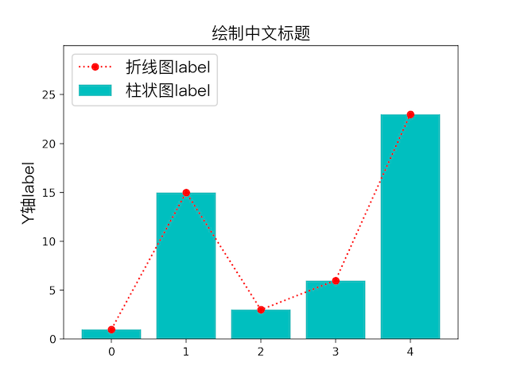
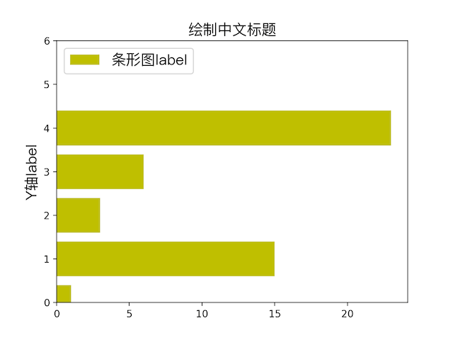
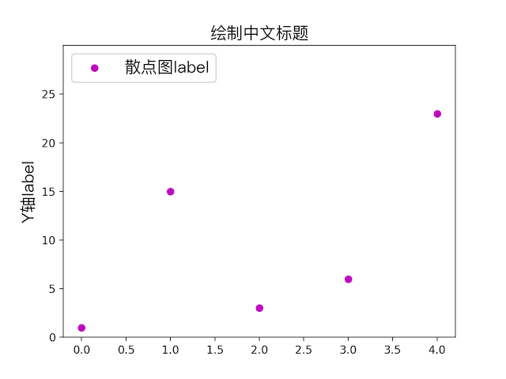
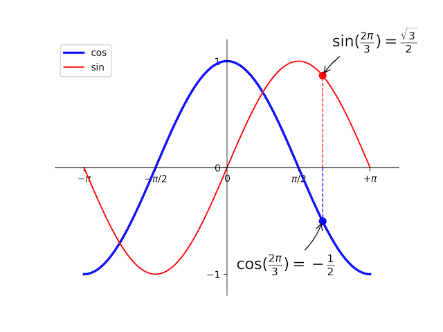
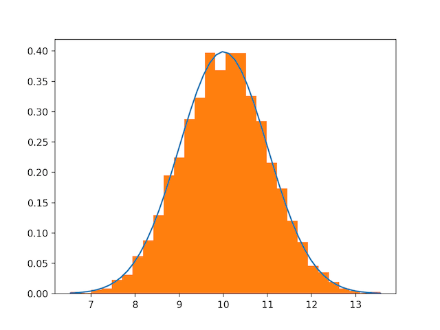

客户端码农学习ML —— Matplotlib基本用法
在进行AI学习、统计的时候，通常用Matplotlib进行数据的可视化，本文总结下Matplotlib中基本用法，首先import matplotlib.pyplot as plt。
基本用法
Matplotlib可以绘制很多种类型的图，见底部参考，常见的是折线图，其次还有散点图、柱状图、条状图、饼图、动态图、3D图等。
折线图
先备注下常用api
1 | fig = plt.figure() #开始画图 |
下表包含了plot可以使用的风格:
| 标记 | 连接线型 | 标记 | 数据点型 | |
|---|---|---|---|---|
| - | 实线（默认） | + | 加号 | |
| – | 虚线 | o | 圆圈 | |
| : | 点线 | * | 星号 | |
| -. | 点划线 | . | 实心点 | |
| 标记 | 颜色 | x | 叉 | |
| r | 红 | s | 正方形 | |
| g | 绿 | d | 钻石 | |
| b | 蓝 | ^ | 上三角 | |
| c | 蓝绿 | v | 下三角 | |
| m | 紫红 | < | 左三角 | |
| y | 黄 | > | 右三角 | |
| k | 黑 | p | 正五角形 | |
| w | 白 | h | 正六角形 |
颜色除了预定义好的单个字母表示，还可以用color=’#00ff00’或者color=(1.0, 0.5, 0.04)表示。
一个简单示例
1 | import matplotlib.pyplot as plt |
下图中红色的即是画出来的折线图效果

柱状图
只要将上个示例中的plot换成plt.scatter(range(0, 5), y, color=’m’, label=”散点图label”)即可画出柱状图，即上图中蓝绿色的柱子。
条状图
plot换成plt.barh(range(0, 5), y, color=’y’, label=”条形图label”)

散点图
plot换成plt.scatter(range(0, 5), y, color=’m’, label=”散点图label”)

饼状图
https://liam0205.me/2014/09/11/matplotlib-tutorial-zh-cn/
等高线图
灰度图
量场图
极轴图
动态图
3D图
一些有趣示例
自定义坐标系画三角函数
1 | import matplotlib.pyplot as plt |

numpy里画的正态分布图
1 | # Build a vector of 10000 normal deviates with variance 0.5^2 and mean 2 |

除此之外，还可以画子图，还有大量api可供使用，画出更绚丽的图片来，可看参考里的官方文档尝试。
参考
https://matplotlib.org/gallery.html
https://docs.scipy.org/doc/numpy-dev/user/quickstart.html
https://www.jianshu.com/p/7fbecf5255f0